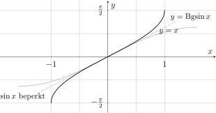
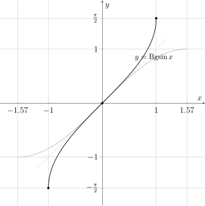
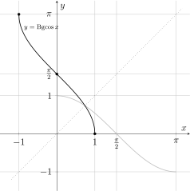
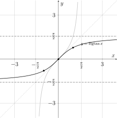
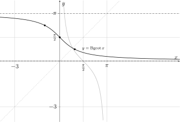

Hoofdstuk 10Cyclometrische functies

Leerplandoelstellingen (GO! Navigator)
Gevorderde wiskunde (WD3_06.08)
-
• WD3_06.08.20 (MD 06.08.08) De leerlingen leggen grafisch het verband tussen inverteerbare functies en hun inverse.
-
– afbakening: bijectie
-
– afbakening: cyclometrische functies
-
-
• WD3_06.08.21 (MD 06.08.07) De leerlingen leggen het verband tussen de grafiek en het voorschrift van een functie en haar kenmerken.
-
– afbakening: veeltermfuncties, rationale functies, (elementaire) irrationale functies, exponentiële functies, logaritmische functies \(f(x)=\log _a(x)\), goniometrische functies \(f(x)=\cos x\) en \(f(x)=\tan x\), cyclometrische functies, absolute waardenfunctie, meervoudig functievoorschrift
-
– afbakening: domein, bereik, nulwaarden, tekenverloop, stijgen/dalen/constant, extrema, constante/toenemende/afnemende stijging/daling, symmetrie, periode, amplitude, asymptotisch gedrag, gedrag op oneindig
-
Didactische uitwerking: inverse functies, domeinbeperking, symmetrie, eigenschappen van cyclometrische functies gebruiken om uitdrukkingen te vereenvoudigen
Extra uitleg: verband met grafieken, hoofdwaarden, samengestelde functies
I Bgsin
Probleem
De omgekeerde relatie van \(\sin \) of \(\bgsin \) is geen functie!
Oplossing
We beperken daarom het domein tot
\[ \left [-\frac {\pi }{2},\frac {\pi }{2}\right ], \]
zo wordt \(y=\sin x\) een bijectie en is de inverse relatie een functie.
1 Definitie
\begin{align*} \Bgsin : [-1,1] &\longrightarrow \left [-\frac {\pi }{2},\frac {\pi }{2}\right ] : x \longmapsto \Bgsin x \\ &\text {met } y=\Bgsin x \quad \Longleftrightarrow \quad \sin y=x \text { en } y\in \left [-\frac {\pi }{2},\frac {\pi }{2}\right ] \end{align*}
2 Eigenschappen en grafiek
\(\seteqnumber{0}{}{0}\)\begin{align*} \dom \Bgsin & =[-1,1] \\ \ber \Bgsin & =\left [-\frac {\pi }{2},\frac {\pi }{2}\right ] \end{align*}

3 Voorbeelden
-
(a) \(\Bgsin 0=0\)
-
(b) \(\Bgsin 1=\frac {\pi }{2}\)
-
(c) \(\Bgsin (-1)=-\frac {\pi }{2}\)
-
(d) \(\Bgsin \left (\frac {1}{2}\right )=\frac {\pi }{6}\)
-
(e) \(\Bgsin \left (-\frac {\sqrt 2}{2}\right )=-\frac {\pi }{4}\)
II Bgcos
We beperken het domein voor de cos nu tot \([0,\pi ]\).
1 Definitie
\begin{align*} \Bgcos : [-1,1] &\longrightarrow [0,\pi ] : x \longmapsto \Bgcos x \\ &\text {met } y=\Bgcos x \quad \Longleftrightarrow \quad \cos y=x \text { en } y\in [0,\pi ] \end{align*}
2 Eigenschappen en grafiek
\(\seteqnumber{0}{}{0}\)\begin{align*} \dom \Bgcos & =[-1,1] \\ \ber \Bgcos & =[0,\pi ] \end{align*}

3 Voorbeelden
-
(a) \(\Bgcos 1=0\)
-
(b) \(\Bgcos 0=\frac {\pi }{2}\)
-
(c) \(\Bgcos (-1)=\pi \)
-
(d) \(\Bgcos \left (\frac {1}{2}\right )=\frac {\pi }{3}\)
-
(e) \(\Bgcos \left (-\frac {\sqrt 2}{2}\right )=\frac {3\pi }{4}\)
III Bgtan
We beperken het domein voor de tan nu tot \(\left (-\frac {\pi }{2},\frac {\pi }{2}\right ).\)
1 Definitie
\begin{align*} \Bgtan : \R &\longrightarrow \left (-\frac {\pi }{2},\frac {\pi }{2}\right ) : x \longmapsto \Bgtan x \\ &\text {met } y=\Bgtan x \quad \Longleftrightarrow \quad \tan y=x \text { en } y\in \left (-\frac {\pi }{2},\frac {\pi }{2}\right ) \end{align*}
2 Eigenschappen en grafiek
\(\seteqnumber{0}{}{0}\)\begin{align*} \dom \Bgtan & =\R \\ \ber \Bgtan & =\left (-\frac {\pi }{2},\frac {\pi }{2}\right ) \end{align*}

3 Voorbeelden
-
(a) \(\Bgtan 0=0\)
-
(b) \(\Bgtan 1=\frac {\pi }{4}\)
-
(c) \(\Bgtan (-1)=-\frac {\pi }{4}\)
-
(d) \(\Bgtan (\sqrt 3)=\frac {\pi }{3}\)
-
(e) \(\Bgtan (-\sqrt 3)=-\frac {\pi }{3}\)
IV Bgcot
We beperken het domein voor de cot nu tot \((0,\pi ).\)
1 Definitie
\begin{align*} \Bgcot : \R &\longrightarrow (0,\pi ) : x \longmapsto \Bgcot x \\ &\text {met } y=\Bgcot x \quad \Longleftrightarrow \quad \cot y=x \text { en } y\in (0,\pi ) \end{align*}
2 Eigenschappen en grafiek
\(\seteqnumber{0}{}{0}\)\begin{align*} \dom \Bgcot & =\R \\ \ber \Bgcot & =(0,\pi ) \end{align*}

3 Voorbeelden
-
(a) \(\Bgcot 0=\frac {\pi }{2}\)
-
(b) \(\Bgcot 1=\frac {\pi }{4}\)
-
(c) \(\Bgcot (-1)=\frac {3\pi }{4}\)
-
(d) \(\Bgcot (\sqrt 3)=\frac {\pi }{6}\)
-
(e) \(\Bgcot (-\sqrt 3)=\frac {5\pi }{6}\)
V Eigenschappen
1 Inverse eigenschappen
Stellingen
\begin{align*} \sin (\Bgsin x)&=x & \qquad (x\in [-1,1])\\[1.5ex] \cos (\Bgcos x)&=x & \qquad (x\in [-1,1])\\[1.5ex] \tan (\Bgtan x)&=x & \qquad (x\in \R )\\[1.5ex] \cot (\Bgcot x)&=x & \qquad (x\in \R ) \end{align*}
Bewijzen
Neem \(x\in [-1,1]\). Stel \(y=\Bgsin x\).
\(\seteqnumber{0}{}{0}\)\begin{align*} & & y & = \Bgsin x \\ & \Leftrightarrow & \sin y & = x && \text {met } y\in \left [-\frac {\pi }{2},\frac {\pi }{2}\right ] \\ & \Leftrightarrow & \sin (\Bgsin x) & = x. \end{align*}
\[ \boxed {\sin (\Bgsin x)=x} \]
Rest analoog.
Stellingen
\begin{align*} \Bgsin (\sin x) & =x & \qquad \left (x\in \left [-\frac {\pi }{2},\frac {\pi }{2}\right ]\right ) \\[1.5ex] \Bgcos (\cos x) & =x & \qquad (x\in [0,\pi ]) \\[1.5ex] \Bgtan (\tan x) & =x & \qquad \left (x\in \left ]-\frac {\pi }{2},\frac {\pi }{2}\right [\right ) \\[1.5ex] \Bgcot (\cot x) & =x & \qquad (x\in ]0,\pi [) \end{align*}
Bewijzen
Neem \(x\in \left [-\frac {\pi }{2},\frac {\pi }{2}\right ]\). Stel \(y=\Bgsin (\sin x)\).
\(\seteqnumber{0}{}{0}\)\begin{align*} & & y & = \Bgsin (\sin x) \\ & \Leftrightarrow & \sin y & = \sin x && \text {met } y\in \left [-\frac {\pi }{2},\frac {\pi }{2}\right ] \\ & \Leftrightarrow & y & = x && \text {want \(\sin \) is injectief op dit interval} \\ & \Leftrightarrow & \Bgsin (\sin x) & = x. \end{align*}
\[ \boxed {\Bgsin (\sin x)=x} \]
Rest analoog.
2 Verbanden
Stellingen
\begin{align*} \Bgsin x+\Bgcos x&=\frac {\pi }{2} & \qquad (x\in [-1,1]) \\[1.5ex] \Bgtan x+\Bgcot x&=\frac {\pi }{2} & \qquad (x\in \R ) \end{align*}
Bewijzen
Neem \(x\in [-1,1]\).
\(\seteqnumber{0}{}{0}\)\begin{align*} & & \Bgsin x+\Bgcos x & = \frac {\pi }{2} \\ & \Leftrightarrow & \sin (\Bgsin x+\Bgcos x) & = \sin \frac {\pi }{2} \\ & \Leftrightarrow & \sin (\Bgsin x)\cos (\Bgcos x) +\cos (\Bgsin x)\sin (\Bgcos x) & = 1 \\ & \Leftrightarrow & x\cdot x+\sqrt {1-x^2}\cdot \sqrt {1-x^2} & = 1 \\ & \Leftrightarrow & x^2+1-x^2 & = 1 \\ & \Leftrightarrow & 1 & = 1. \end{align*}
\[ \boxed {\Bgsin x+\Bgcos x=\frac {\pi }{2}} \]
Rest analoog.
3 Symmetrie
Stellingen
\begin{align*} \Bgsin (-x)&=-\Bgsin x & \qquad (x\in [-1,1])\\[1.5ex] \Bgcos (-x)&=\pi -\Bgcos x & \qquad (x\in [-1,1])\\[1.5ex] \Bgtan (-x)&=-\Bgtan x & \qquad (x\in \R )\\[1.5ex] \Bgcot (-x)&=\pi -\Bgcot x & \qquad (x\in \R ) \end{align*}
Bewijzen
Neem \(x\in [-1,1]\). Stel \(\alpha =\Bgsin x\).
\(\seteqnumber{0}{}{0}\)\begin{align*} & & \alpha & = \Bgsin x \\ & \Leftrightarrow & \sin \alpha & = x && \text {met }\alpha \in \left [-\frac {\pi }{2},\frac {\pi }{2}\right ] \end{align*}
Omdat
\[ -\alpha \in \left [-\frac {\pi }{2},\frac {\pi }{2}\right ] \]
geldt:
\(\seteqnumber{0}{}{0}\)\begin{align*} & & \sin (-\alpha ) & = -\sin \alpha \\ & \Leftrightarrow & \sin (-\alpha ) & = -x \\ & \Leftrightarrow & \Bgsin (-x) & = -\alpha \\ & \Leftrightarrow & \Bgsin (-x) & = -\Bgsin x. \end{align*}
\[ \boxed {\Bgsin (-x)=-\Bgsin x} \]
Rest analoog.
4 Gemengde samenstellingen
Stellingen
\begin{align*} \cos (\Bgsin x)&=\sqrt {1-x^2} & \qquad (x\in [-1,1])\\[1.5ex] \sin (\Bgcos x)&=\sqrt {1-x^2} & \qquad (x\in [-1,1]) \end{align*}
\begin{align*} \sin (\Bgtan x)&=\frac {x}{\sqrt {1+x^2}} & \qquad (x\in \R )\\[1.5ex] \cos (\Bgtan x)&=\frac {1}{\sqrt {1+x^2}} & \qquad (x\in \R )\\[1.5ex] \tan (\Bgsin x)&=\frac {x}{\sqrt {1-x^2}} & \qquad (x\in (-1,1))\\[1.5ex] \cot (\Bgcos x)&=\frac {x}{\sqrt {1-x^2}} & \qquad (x\in (-1,1)) \end{align*}
\begin{align*} \cot (\Bgtan x)&=\frac {1}{x} & \qquad (x\in \R _0)\\[1.5ex] \tan (\Bgcot x)&=\frac {1}{x} & \qquad (x\in \R _0) \end{align*}
Bewijzen
Neem \(x\in [-1,1]\). Stel \(\alpha =\Bgsin x\).
\(\seteqnumber{0}{}{0}\)\begin{align*} & & \alpha & = \Bgsin x \\ & \Leftrightarrow & \sin \alpha & = x && \text {met }\alpha \in \left [-\frac {\pi }{2},\frac {\pi }{2}\right ] \end{align*}
Omdat \(\cos \alpha \geq 0\), geldt:
\(\seteqnumber{0}{}{0}\)\begin{align*} & & \sin ^2\alpha +\cos ^2\alpha & = 1 \\ & \Leftrightarrow & x^2+\cos ^2\alpha & = 1 \\ & \Leftrightarrow & \cos ^2\alpha & = 1-x^2 \\ & \Leftrightarrow & \cos \alpha & = \sqrt {1-x^2} \\ & \Leftrightarrow & \cos (\Bgsin x) & = \sqrt {1-x^2}. \end{align*}
\[ \boxed {\cos (\Bgsin x)=\sqrt {1-x^2}} \]
Rest analoog.
VI Oefeningen
Oefening 1
Bepaal exact.
-
(a) \(\Bgsin \left (\frac 12\right )\)
-
(b) \(\Bgsin \left (-\frac {\sqrt 3}{2}\right )\)
-
(c) \(\Bgcos \left (\frac 12\right )\)
-
(d) \(\Bgcos \left (-\frac {\sqrt 2}{2}\right )\)
-
(e) \(\Bgtan (1)\)
-
(f) \(\Bgtan (-\sqrt 3)\)
-
(g) \(\Bgcot (0)\)
-
(h) \(\Bgcot (-1)\)
Oefening 2
Vereenvoudig.
-
(a) \(\sin (\Bgsin x)\), met \(x\in [-1,1]\)
-
(b) \(\cos (\Bgcos x)\), met \(x\in [-1,1]\)
-
(c) \(\tan (\Bgtan x)\), met \(x\in \R \)
-
(d) \(\cot (\Bgcot x)\), met \(x\in \R \)
-
(e) \(\Bgsin (\sin x)\), met \(x\in \left [-\frac {\pi }{2},\frac {\pi }{2}\right ]\)
-
(f) \(\Bgcos (\cos x)\), met \(x\in [0,\pi ]\)
Oefening 3
Bereken telkens de juiste hoofdwaarde.
-
(a) \(\Bgsin \left (\sin \frac {5\pi }{6}\right )\)
-
(b) \(\Bgsin \left (\sin \frac {7\pi }{6}\right )\)
-
(c) \(\Bgcos \left (\cos \frac {5\pi }{6}\right )\)
-
(d) \(\Bgcos \left (\cos \frac {7\pi }{6}\right )\)
-
(e) \(\Bgtan \left (\tan \frac {3\pi }{4}\right )\)
-
(f) \(\Bgcot \left (\cot \frac {5\pi }{4}\right )\)
Oefening 4
Los op.
-
(a) \(\Bgsin x=\frac {\pi }{6}\)
-
(b) \(\Bgsin x=-\frac {\pi }{4}\)
-
(c) \(\Bgcos x=\frac {2\pi }{3}\)
-
(d) \(\Bgcos x=\frac {\pi }{4}\)
-
(e) \(\Bgtan x=-\frac {\pi }{3}\)
-
(f) \(\Bgtan x=\frac {\pi }{4}\)
-
(g) \(\Bgcot x=\frac {3\pi }{4}\)
-
(h) \(\Bgcot x=\frac {\pi }{6}\)
Oefening 5
Toon aan met behulp van de definities.
-
(a) \(\Bgsin x+\Bgcos x=\frac {\pi }{2}\), met \(x\in [-1,1]\)
-
(b) \(\Bgtan x+\Bgcot x=\frac {\pi }{2}\), met \(x\in \R \)
-
(c) \(\Bgsin (-x)=-\Bgsin x\), met \(x\in [-1,1]\)
-
(d) \(\Bgcos (-x)=\pi -\Bgcos x\), met \(x\in [-1,1]\)
-
(e) \(\cos (\Bgsin x)=\sqrt {1-x^2}\), met \(x\in [-1,1]\)
-
(f) \(\sin (\Bgtan x)=\frac {x}{\sqrt {1+x^2}}\), met \(x\in \R \)
-
(g) \(\tan (\Bgsin x)=\frac {x}{\sqrt {1-x^2}}\), met \(x\in (-1,1)\)
-
(h) \(\cot (\Bgtan x)=\frac {1}{x}\), met \(x\in \R _0\)